Welcome to Phnom Penh
 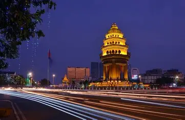
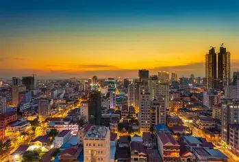
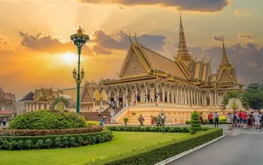
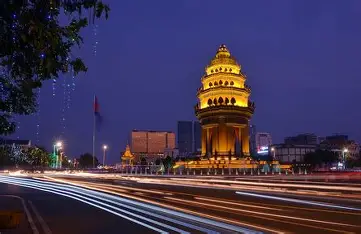
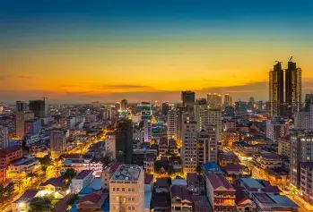
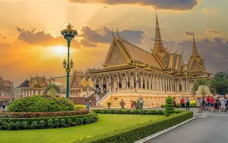
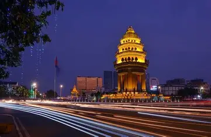
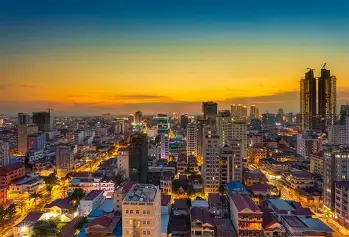
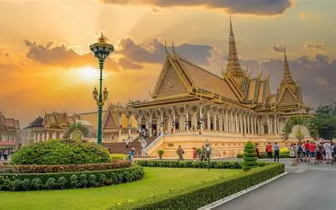
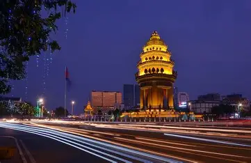
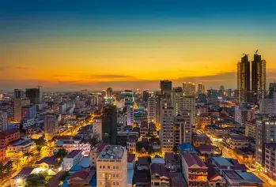
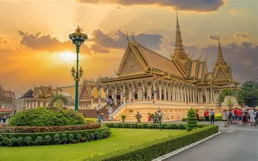
Phnom Penh is the capital and most populous city of Cambodia. It has been the national capital since 1865 and has grown to become the nation's primate city and its political, economic, industrial, and cultural centre. The city's name derives from Wat Phnom, a Buddhist temple, and Lady Penh, the city's founder. It sits at the confluence of the Tonlé Sap and Mekong rivers, and is the start of the Bassac River. It is also the seat of Cambodia's monarchy, based at the Royal Palace. Founded in 1372, Phnom Penh succeeded Angkor Thom as the national capital in 1434 following the fall of Angkor, and remained so until 1497. It regained its capital status during the French colonial era. It underwent a period of investment and modernization during Cambodia's independence period, earning the nickname the "Pearl of Asia" for its colonial French, New Khmer and Art Deco architecture. The city's population swelled in the 1960s and 1970s as refugees fled from civil war and American bombing during the Vietnam War. Phnom Penh's entire population was forcibly evacuated in 1975 by the Khmer Rouge, and faced persecution, forced labour and genocide. Phnom Penh remained largely uninhabited during the Democratic Kampuchea era until Vietnam-backed forces took the city in 1979.
The Royal Palace in Phnom Penh, Cambodia, is a stunning architectural masterpiece that serves as the official residence of the country’s monarch. Built in the mid-19th century, this grand complex is a symbol of Khmer culture, history, and spirituality.
Phnom Penh’s riverfronts where the Mekong, Tonle Sap, and Bassac rivers meet have always played a key role in the city’s economy, environment, and culture. The capital is growing rapidly, and its waterfronts are changing. View of Phnom Penh’s riverside in front of the Royal Palace.
Discover the best places to eat in Phnom Penh, from authentic Khmer cuisine to street food delights and international fine dining. Explore the city's top restaurants, cafes, and dessert spots for every palate.